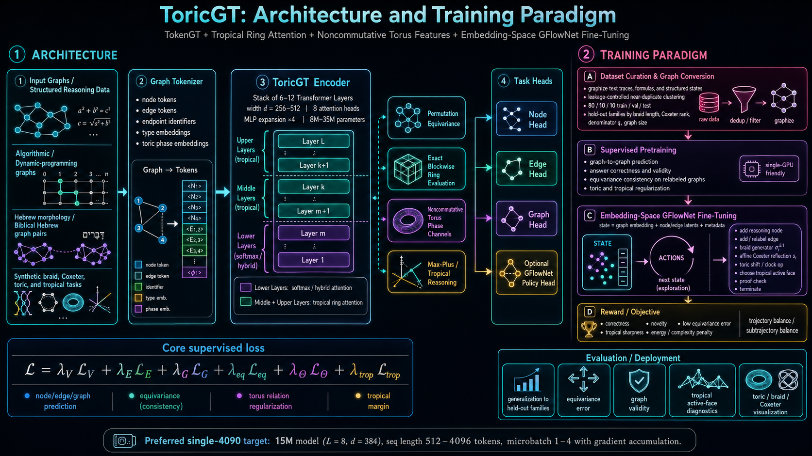
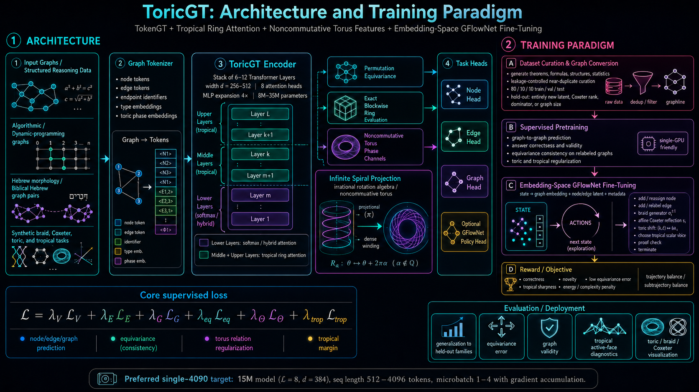
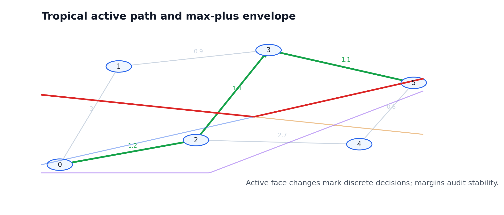
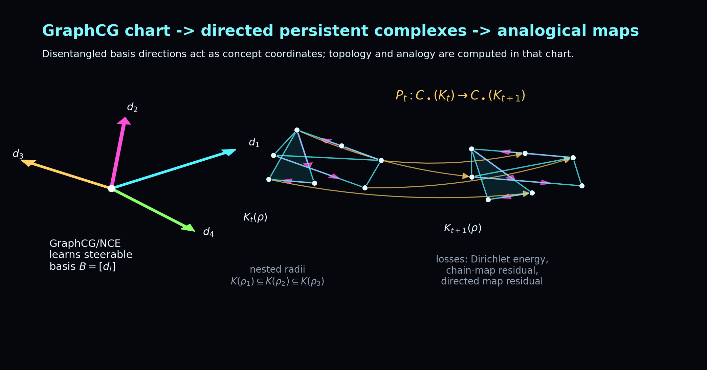
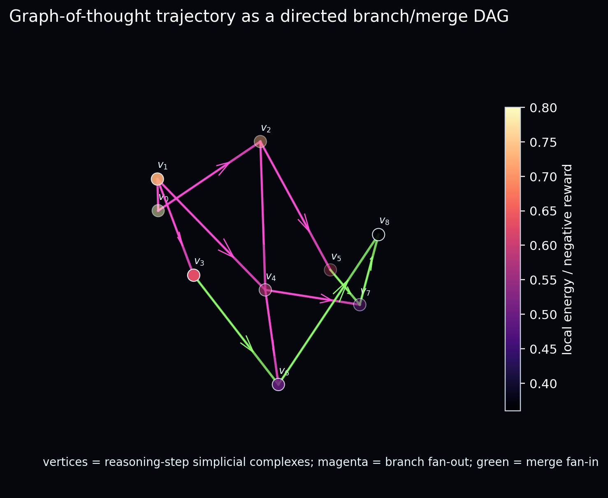
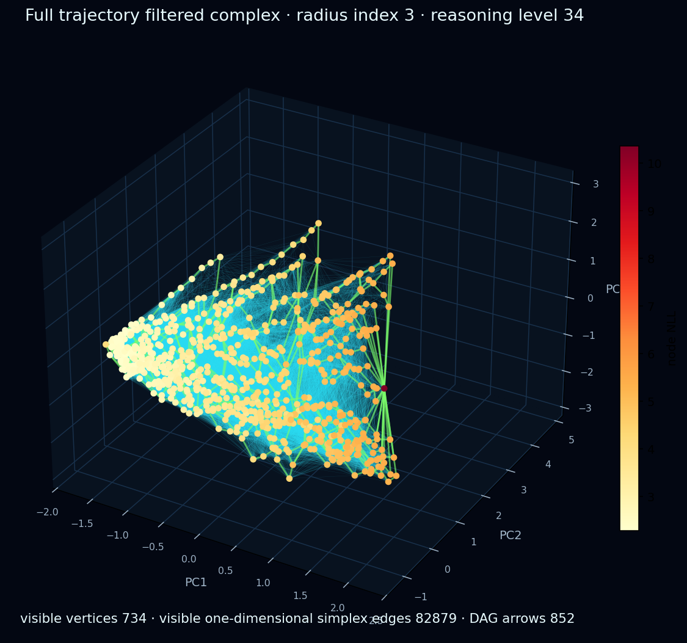
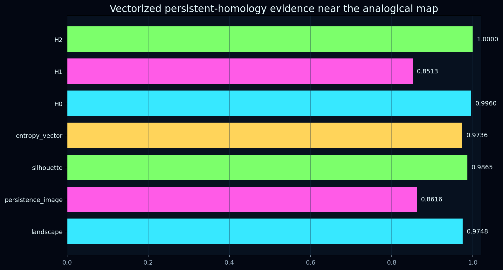
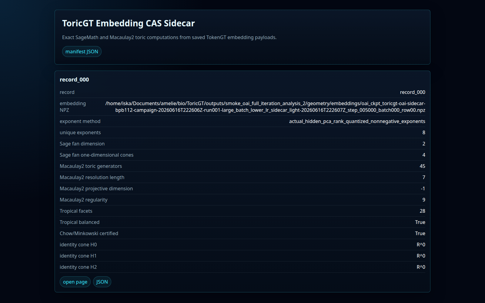
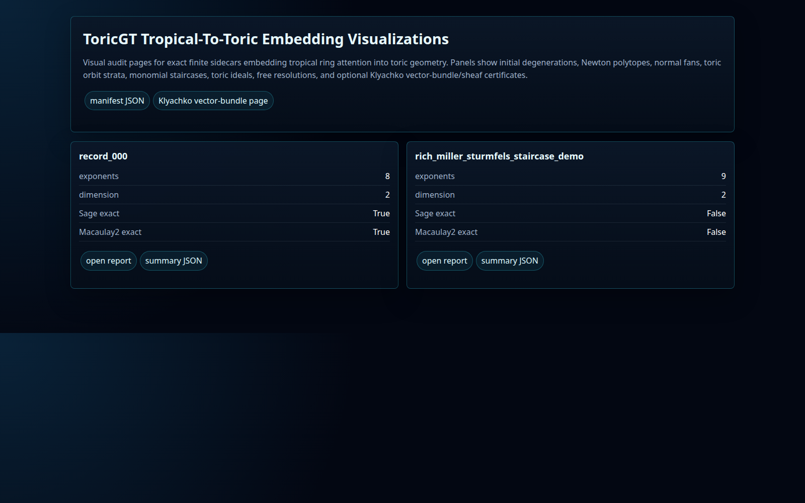
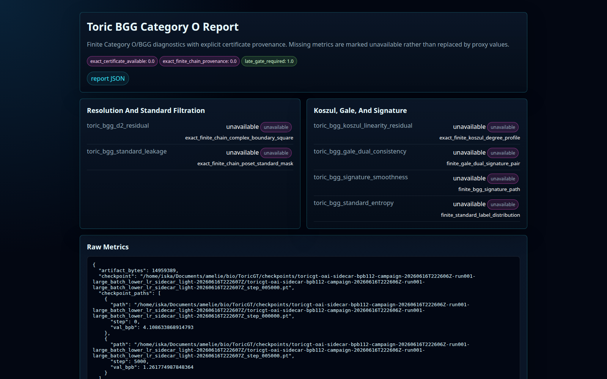

final int8+zlib round-trip BPB
Graph-token reasoning under a BPB artifact budget
ToricGT
ToricGT embeds tropical ring attention into toric geometry, then uses graph tokens, Forest-of-Thought search, persistent homology, Toric BGG certificates, vector-bundle one-dimensional-cone sheaf audits, and BPB-first training to pressure compact language models toward structured reasoning.

Best Completed Run
Generated 2026-06-21 16:50:50 UTC from training_notes/tg-bpb-bestof10-convextok2048-det-20260621T040717Z/campaign_state.json. The page should be regenerated after the 10-run sweep, 900-step candidate, HF upload, and PR creation finish.
score on the OAI FineWeb validation stream
latest train-side BPB in the selected run
model artifact before code/dependency accounting
Campaign Trace
Campaign tg-bpb-bestof10-convextok2048-det-20260621T040717Z restarts from step 0 each attempt. Current best profile: gate2500_experimental_family_selective. Best run id: tg-bpb-bestof10-convextok2048-det-20260621T040717Z-r008-gate2500_experimental_family_selective-20260621T154110Z.
Core Metrics
| final_int8_loss | 0.842962 |
|---|---|
| final_int8_bpb | 0.4953 |
| val_loss | 0.838000 |
| val_bpb | 0.4924 |
| train_loss | 0.855800 |
| train_bpb | 0.5036 |
| graph_lm_bpb | 0.2962 |
| checkpoint_step | 1000.0000 |
What Is Being Optimized
BPB stays primary. The advanced losses are small, evidence-weighted pressures that shape hidden graph structure, retrieval, toric/tropical geometry, and algebraic consistency without letting those objectives dominate byte likelihood.
- graphcg_loss0.011413
Full-rank GraphCG pressure: disentangles latent concept axes so graph and byte objectives can expose stable directions rather than collapsing into one entangled basis.
- analogy_loss0.064827
Analogical-retrieval lattice loss: encourages maps between reasoning memories through simplex-tree and vectorized persistent-homology similarity gates.
- tokengt_graph_loss1.162810
First-class TokenGT graph objective: trains causal node, edge, endpoint, distance, torus, and tokenization-DAG features used by the OAI FineWeb adapter.
- memory_loss1.140689
Trajectory-memory retrieval loss: selects reusable reasoning traces and stabilizes retrieval-conditioned auxiliary routing.
- toric_geometry_loss5.884988
Toric embedding and fan audit loss: keeps tropical ring attention active faces embedded into toric charts with interpretable cone/fan structure.
- toric_vector_bundle_1d_cone_ce_loss0.704291
Toric vector-bundle one-dimensional-cone/sheaf CE: regularizes per-cone filtrations and sheaf-style compatibility across fan neighborhoods.
- toric_bgg_loss0.164997
Toric BGG category-O supervision: keeps finite category-O certificates, standard filtrations, Gale-dual labels, and differential consistency visible.
- koszul_persistence_loss0.045398
Koszul/persistence loss: checks filtered complexes, multigraded modules, and chain-complex consistency for topological reasoning traces.
- toric_cca_topology_loss1.045991
Combinatorial toric commutative algebra/topology loss: tracks monomial staircases, syzygies, and CAS-backed toric module diagnostics.
- derived_signature_loss3.243159
Derived-signature distillation: compresses resolution, chain-map, and derived-category evidence into low-rank signatures for training-time audits.
- oai_gflownet_loss1.715701
Embedding-space GFlowNet loss: samples graph-of-thought continuations with reward tied to byte-likelihood, retrieval utility, and structural diversity.
- oai_fot_loss5.027384
Embedding-space Forest-of-Thought loss: searches branching reasoning forests and uses BPB-delta reward to prioritize branches that improve compression.
- oai_mtp_loss11.487040
Multi-token prediction loss: adds short-horizon targets that improve early byte likelihood while staying compatible with graph output flattening.
- graph_lm_loss0.368675
Graph-LM primary loss: trains graph-structured records directly while FineWeb output flattening remains optional and BPB-focused.
Conceptual Helpers
These small animated sketches summarize the operational math: tropical dynamic programming, toric embedding, reasoning forests, and persistence-vector retrieval.
Tropical Path
ConvexTok and tropical attention both expose min-plus or max-plus active paths with margins.
Toric Fan
Active tropical faces are embedded into toric charts so cone, divisor, and one-dimensional-cone audits become meaningful.
Forest Search
Embedding-space FoT/GFlowNet branches are rewarded by BPB-delta and structural diversity.
PH Retrieval
Analogies require simplex-map evidence and vectorized persistent-homology agreement.
Visual Evidence
These are copied from the project’s generated diagrams and audit screenshots so the public page reflects real outputs from the codebase.










Central Construction
ToricGT treats graph-structured data as graph-in/graph-out by default, but gives OAI FineWeb an optional BPB-only flattening path. Tokenization DAGs are graphified, edge tokens are first-class, and tropical dynamic-programming paths are embedded into toric varieties so the model can audit active faces using fans, cones, one-dimensional cones, divisors, sheaf/vector-bundle signals, and commutative-algebra certificates.
Links
| Code | https://github.com/amelie-iska/ToricGT |
|---|---|
| Hugging Face | https://huggingface.co/AmelieSchreiber/toricgt-checkpoints |
| OpenAI Parameter Golf | https://github.com/openai/parameter-golf |
| Submission PR | pending after best-of-10 + 900-step candidate |
| Long Paper | assets/toricgt_toric_bgg_rewrite_amelie_schreiber.tex |
| Condensed Paper | assets/toricgt_neurips_condensed.tex |